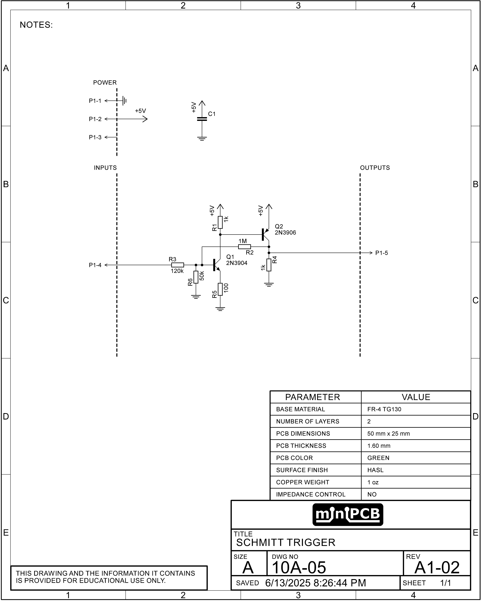
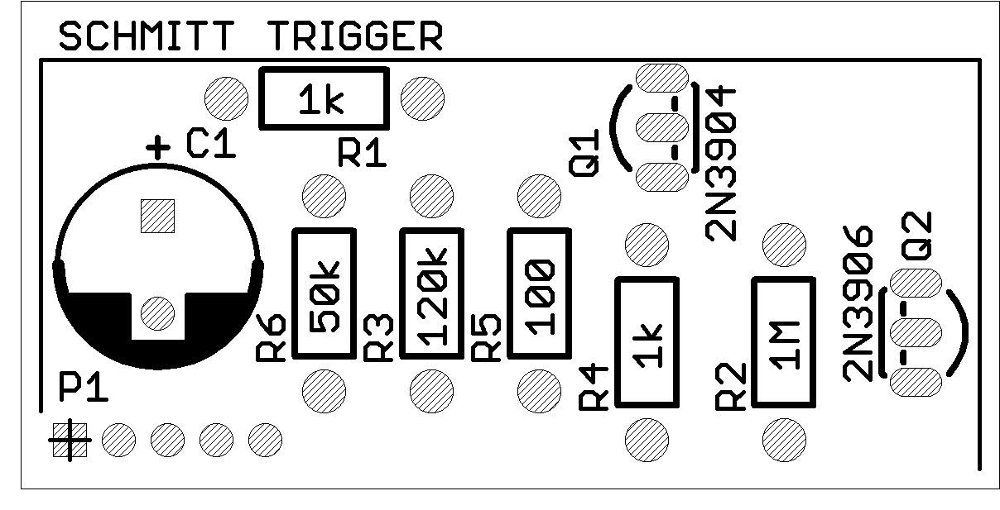

| PCB Details |
Part No: 10A-05 Title: Non-Inverting Schmitt Trigger Pieces per Panel: 8 Board Size: Approx. 50 x 25 mm Panel Size: 100 x 100 mm (V-scored) |
| Key Learning Objectives |
|
| Datasheet | Download |
| Schematic |  |
| Board Top View |  |